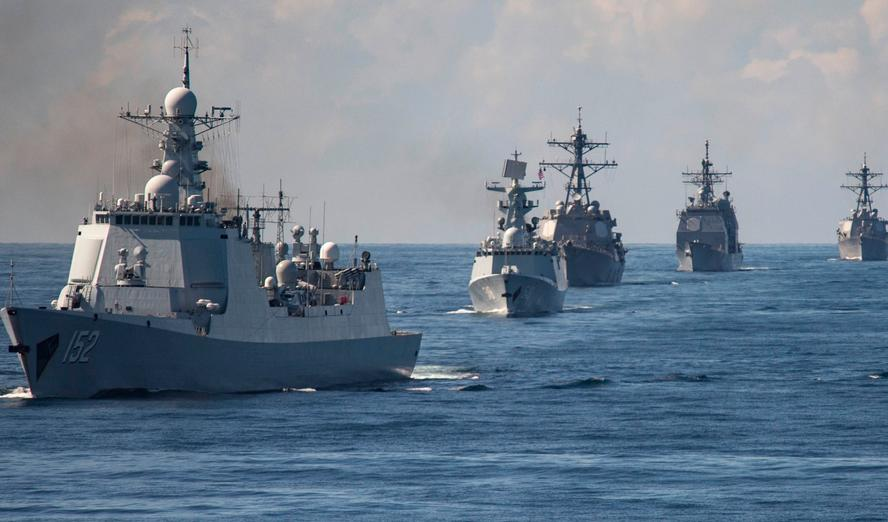

President Wei-lun @RealWeiLun
I am deeply hurting for the families of the Taipuran Civilian that was unjustly murdered today by US
forces. PRM or not we can all agree that the Taipuran people are tired of violence. My trust in the US has begun to dissolve.
26 September 2024 at 7:26pm
Taipura Minute News @TNewsMinute
SHOTS FIRED ON TAIPURAN SOIL! Our sources have confirmed that the US is indeed postured in Taipura. Furthermore they have come
bringing violence killing a PRM operator. President Wei-lun has yet to make a statement.
26 September 2024 at 5:40pm
PRM News @PRMNewsNow
We are disgusting by the unlawful murder of one of our supporters. The US has no right to be
conducting operations in Taipura. The Taipuran people should not be ok with the violence on display by the US.
26 September 2024 at 6:30pm
Shendao Defense Force @SDFOfficial
Our military presence near Taipura is only for the defense of our sovereignty. Any threat from foreign forces will be met with strength.

20 September 2024 at 9:00am
President Wei-lun @RealWeiLun
I assure every Taipuran that we will not surrender to threats. Taipura's independence is not negotiable.
17 September 2024 at 3:10pm
PRM News @PRMNewsNow
Reports suggest that Taipura's government is collapsing under pressure. More citizens are joining the PRM movement every day!
14 September 2024 at 7:30pm
Shendao Peoples Militia @SPMOfficial
Victory is close! With your support, we can secure Taipura's future with the mainland! Fight for unity and prosperity.
14 September 2024 at 9:15am
Lin Hao @PRMSpec
Why hasn't President Wei-lun been removed yet? He's letting Taipura rot under foreign control. Time to take action!
13 September 2024 at 9:15am
Taiwan Unity Party@TUP4Freedom
Stand strong, Taipura! Do not let foreign powers dictate our future. We have the right to self-determination,
not to be puppets of Shendao or the U.S.
Shendao Peoples Militia @SPMOfficial

9 September 2024 at 10:27am
Lin Hao @PRMSpec
I've been hearing rumors that the U.S. is being deployed to Taipura! Disgusting that President Wei-lun is allowing such an overrated
force on to our land. Its imperative that the U.S. is removed from Taipuran soil.
.png)
8 September 2024 at 8:06am
Taipura Minute News @TNewsMinute
Shendao continues to increase thier military presence on our nation's sea border. Government
officials are doing their best to deter any further action of Shendao but have thier hands tied due to the increasing protests of the
RPM which are getting increasingly violent.
5 September 2024 at 3:42pm
President Zhang Min @zzmin
Taipura must reunite with the mainland to ensure thier own economic well being! President Wei-lun is a fool
for not accepting our terms to reunification!
5 September 2024 at 12:33pm
Tsai Yi-cheng@BirdsEyePRM
Absolutely ridiculous that "President" Wei-lun contiues to push back against reunification to Shendao. Join the assembly to secure the safety and future of Taipura!
4 September 2024 at 4:52pm
Shendao Peoples Militia @SPMOfficial
We need your help! Join the Peoples Militia today to protect our nations future!

4 September 2024 at 1:03pm